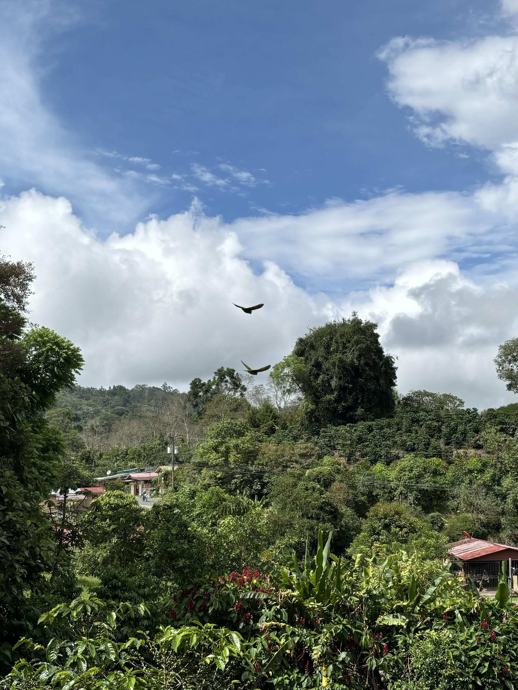
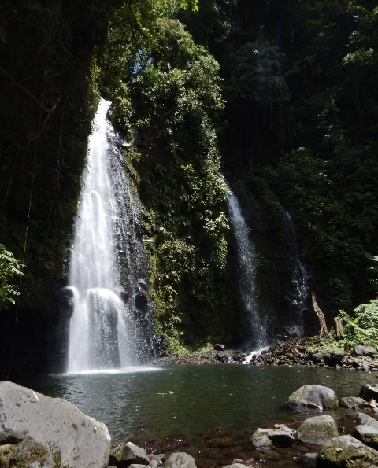
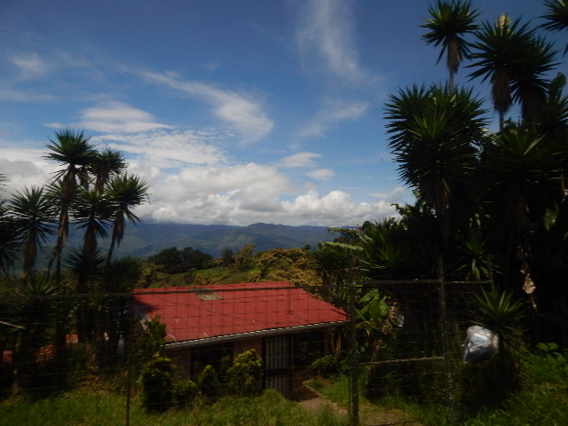

Global Glimpse Blog Post
A nonprofit organization providing students with the experience to learn, grow, and help our world
My Global Glimpse Trip 2024
10/18/24 Logan Szenda
The Program
Available for all elected WHS juniors enrolled in a language class, I had the amazing opportunity to apply for the “Global Glimpse” program that changed my perspective on the world. Juniors that strive for discovery and growth will be elected by your teacher's to attend an interest meeting for the program run by your school's Global Glimpse Leader (or GGL). An online application must be filled out in order to be accepted into the program.
“The world is a book and those who do not travel read only one page.” –Augustine of Hippo
The First Days
I had been enticing the surrounding lush green jungles of Costa Rica. The plane couldn't land any slower. I have been preparing for this moment since the start of my junior year and finally it was here. When the plane finally landed I set foot into a new world far beyond the one I knew, and it would eventually become the opportunity of a lifetime.
The first night we stayed in a hotel, which appeared to be architecturally advanced in contrast with the surrounding homes. I immediately noted the difference in food, being fresh and delicious compared to the U.S. cuisine. The next day our bus ride to our accommodations that we stayed at over the next 2 weeks felt longer than the plane ride. The mountainous terrain made it difficult to not at least feel queasy on the ride.
The Experiences
Arriving at the house our trip began and ended in a flash.The 20 strangers, all the ages of 16-17 became closer than expected. We bonded over music, laughed and ate together, and played games to pass the time.
But this was only in the free time we had, otherwise our days were packed with adventure. Some of my favorite places we visited include...
- Historic and religious sites
- A coffee plantation because we learned that coffee beans are one of Costa Ricas main exported goods
- A dairy farm and we even made fresh cheese
My most favorite was when we hiked down a mountain and swam in the basin of a waterfall. I can say that it was one of the most beautiful experiences of my life.
Most importantly we learned about reducing the human impact that is destroying the environment. Did you know that Costa Rica is ranked as one of the happiest countries in the world because its people are so attuned with nature? Not only do the impacts of the environment help life on earth, but it also helps us during a time where mental illness is a big issue.
The Outcomes
Life here felt very different compared to back home. The houses are made of concrete, with sheet metal roofs and metal gates out front. The windows are always open because of the humidity. The people in the communities are also very close with one another as the town populations are very small. It was very interesting to experience this different dynamic in lifestyle.
I highly recommend this opportunity to any juniors that wish to explore, learn, and go out of their comfort zone. I had such an amazing experience and hope others can feel the same.
To learn more visit:https://www.globalglimpse.org/